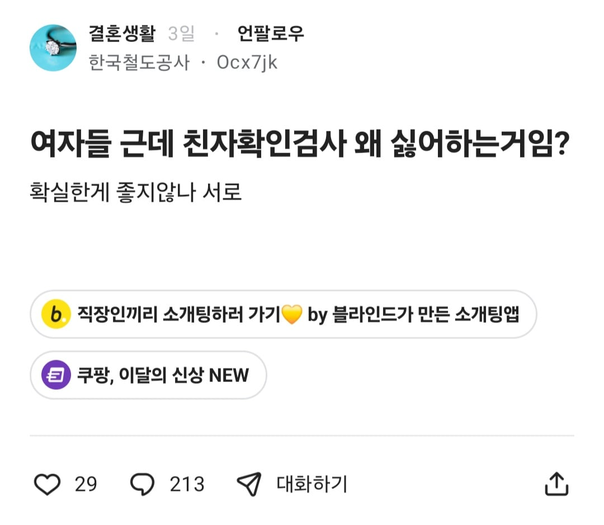
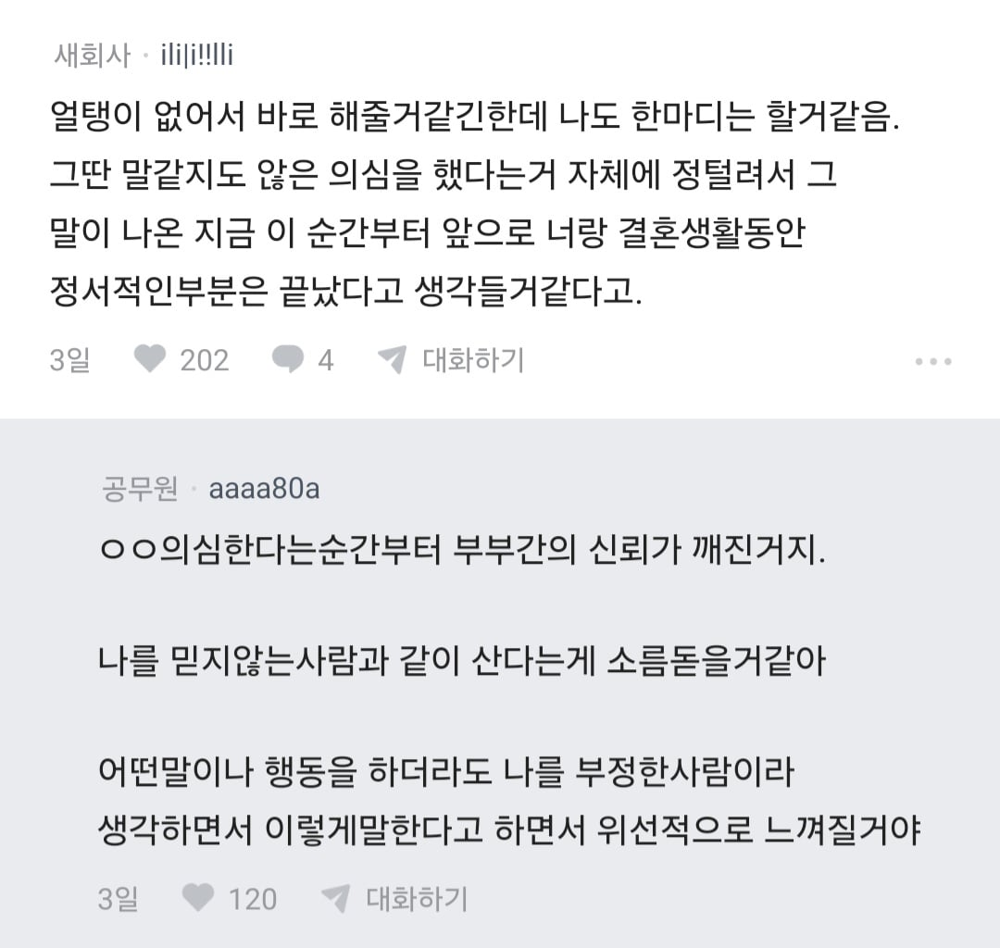
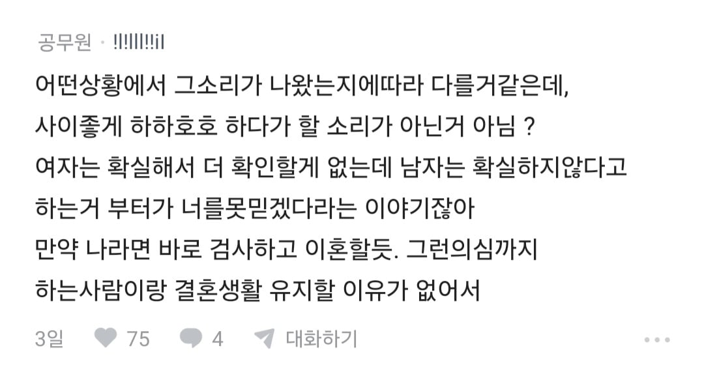
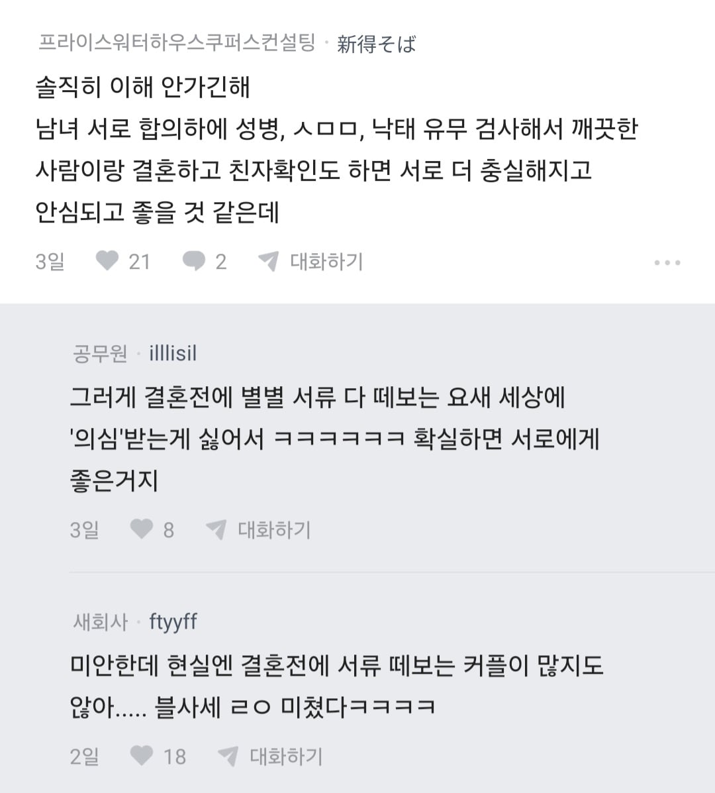
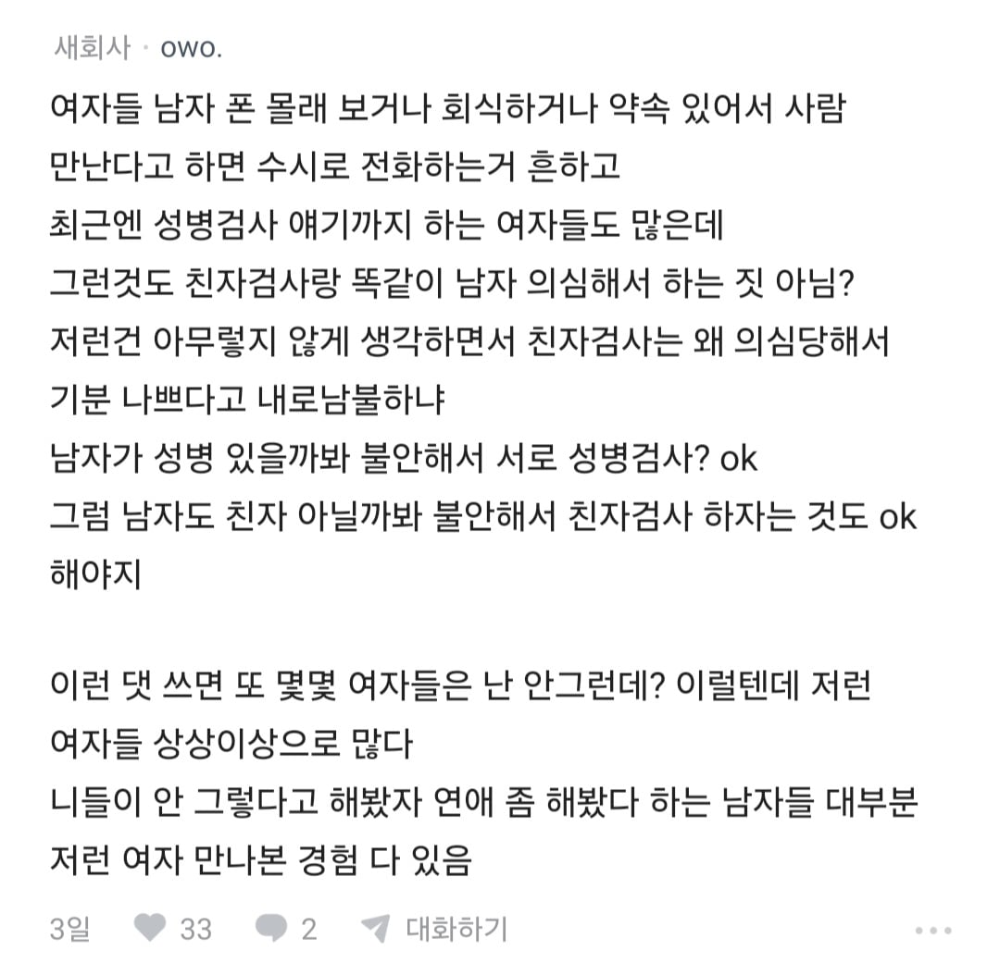
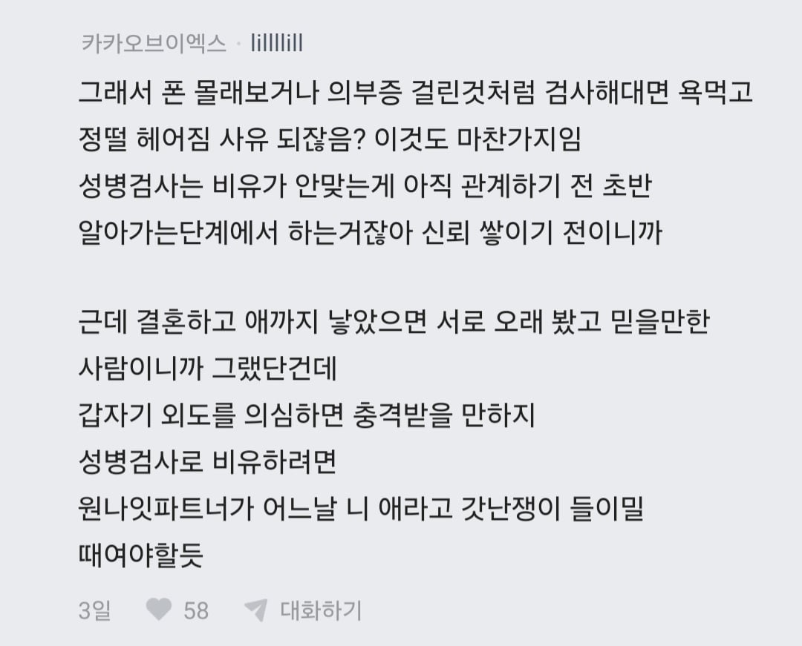
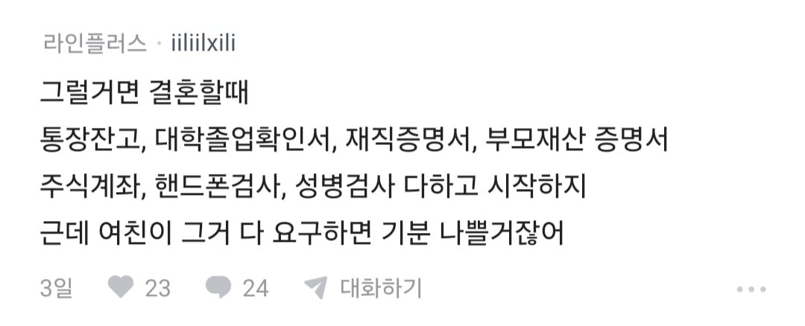
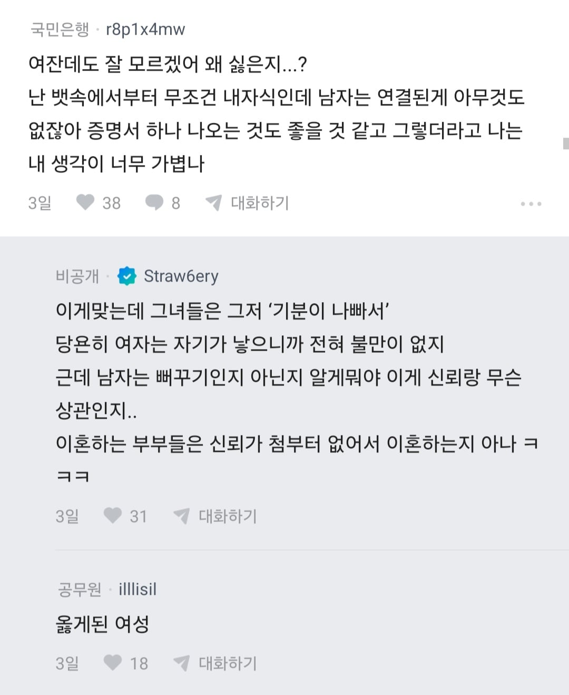
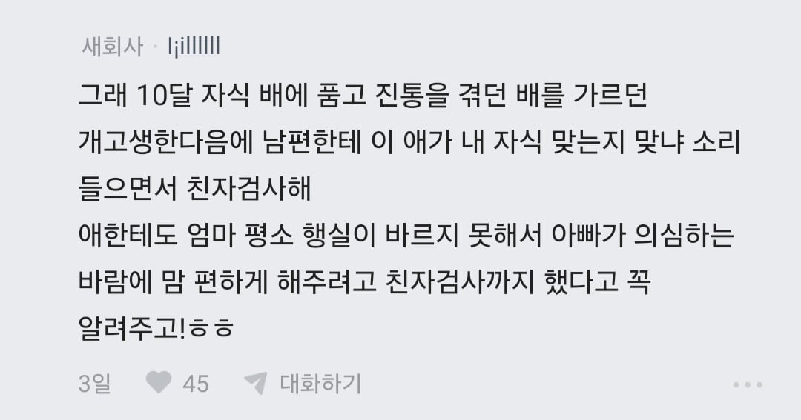
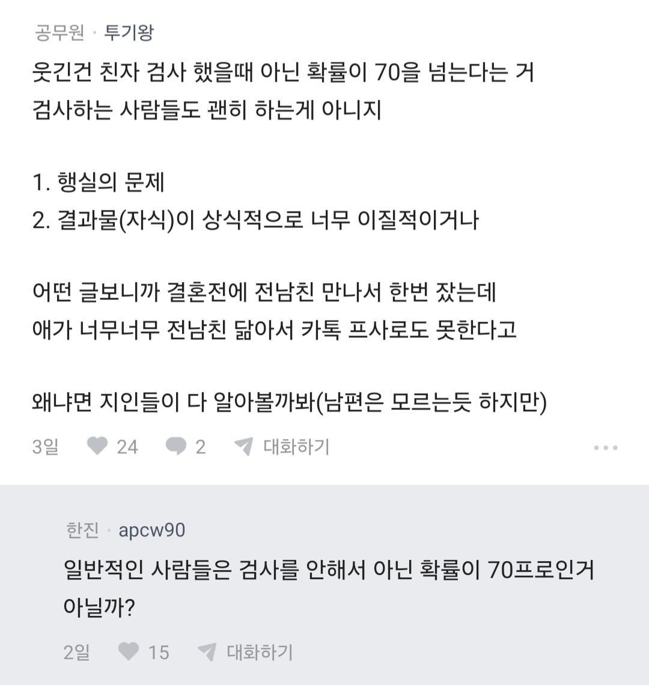
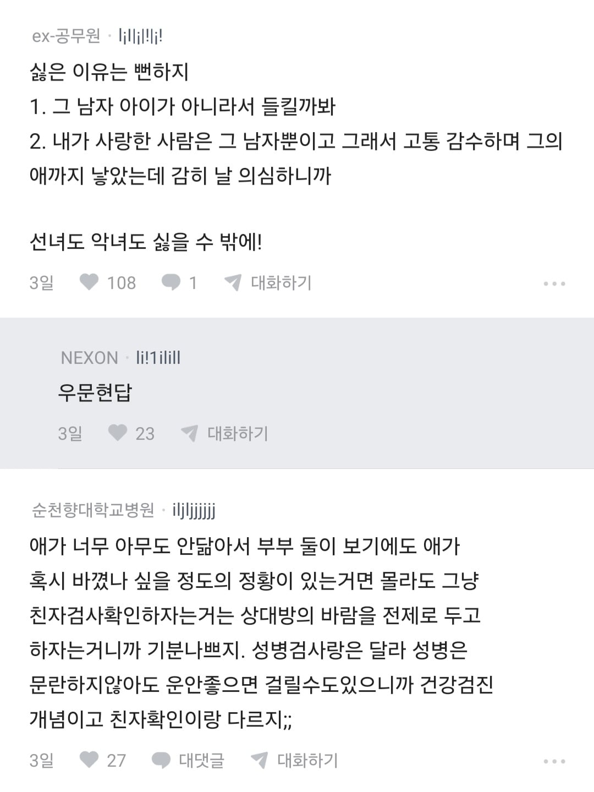
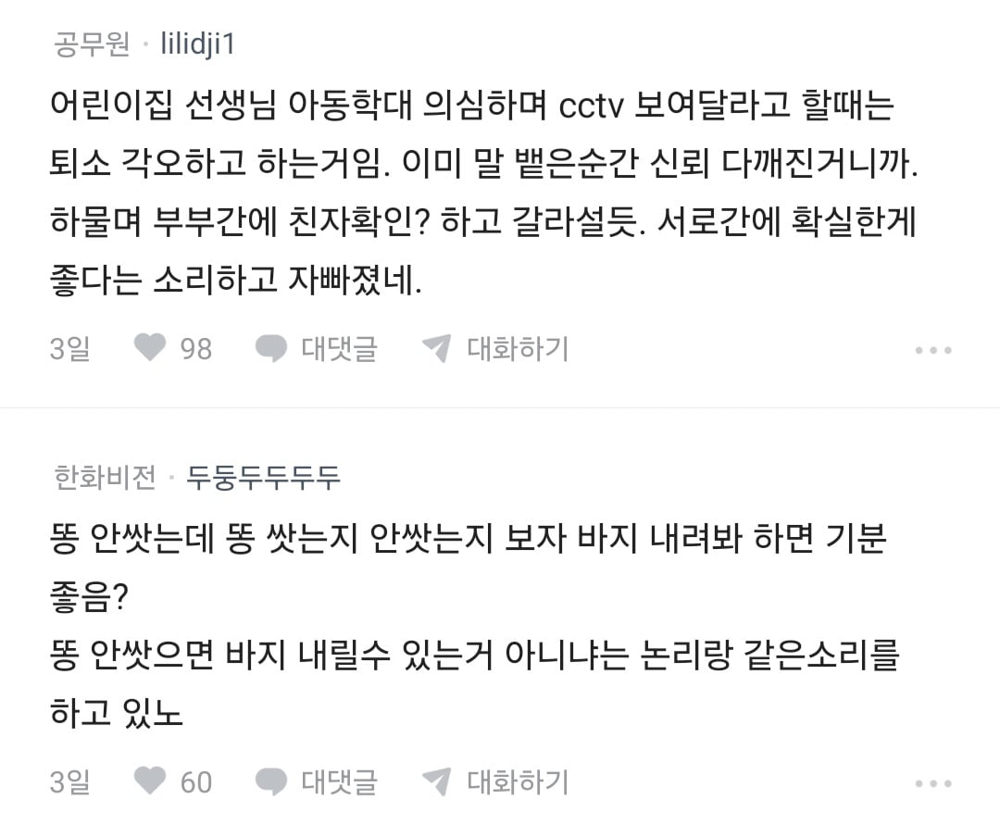
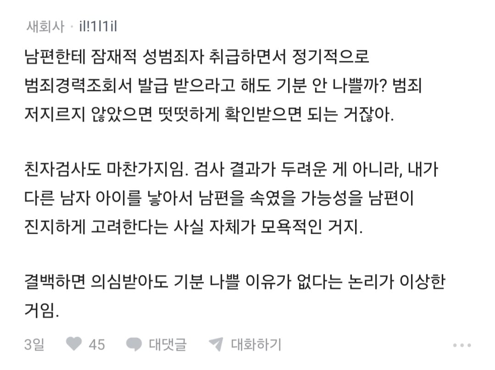













의심을 말끔히 사라지게 할수 있어서 좋은거잖아?..
대체 왜?
확실하지 않으면 승부를 걸지 마라. 이런 거 안 배웠어? 뭐 해? 니네 형님 손 안 찍고
근데 작성자 남녀 갈라치기 페미급이네 ㅋㅋㅋ
진짜 존나 혐오스럽네
어 시발 그러네ㅋㅋㅋㅋ
ㅋㅋㅋㅋㅋㅋㅋㅋ 닉넴부터 도랐네
시간지나면 유전자 편집 통해서 슈퍼 아기 만드는 시대가 오기떄문에 친자검사도 안했는데도 알아서 알 수 있게됨
도무지 여자 쪽이 왜 기분 나쁜지 이해 안 되는 사람은 한국남자 3명중에 1명이 성매매한다는데? 오빠도 혹시 모르니까 확인해 보자. 핸드폰 줘봐! 라고 했을때 어떤느낌인지 상상해봅시다